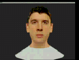

Evaluation of Synthetic Personae in Multimodal Dialogue Interfaces
Background
Synthetic Personae (SPs) are likely to be important in the role of visual agents with which the user can interact in multimodal applications, especially where the purchase requires some browsing, advice, discussion, etc. Many SPs/agents are available on the Internet, although not many applications use them seriously in an integral way. There is very little solid experimental work on which S's are best, in which application contexts, and why. We are carrying out a series of formal experiments at CCIR, Edinburgh, to address this question.
The Experiment
The aim is a formal subjective evaluation of a wide range of SPs in 2 internet/kiosk retail contexts - home furnishings and a CD shop. We expect user preferences for SPs to be application-dependent.
The evaluation uses a questionnaire, a debrief interview and a focus group. The information requested in the questionnaire covers dimensions of user preference such as 'liking', 'realism', 'quality' and 'usefulness'. Dimensions such as 'trust' will need to be investigated subsequently in an experiment where the user has to put real trust in the SP, e.g. by making a real transaction, or where a prize may be won.
One of the underlying motivations for this experiment is that some SPs are much more demanding than others in terms of software development costs and processor power, e.g. realistic SP talking heads with accurate lip synchronisation and realistic facial muscles. We need to know if such SPs are worth the overhead.
The experiment is being run in a number of stages. Stage 1 is the evaluation of five human-like talking head personae in the two contexts mentioned above. These are: a video of a human, a BT Talking Head, a still human video image with stylised lip motion, a still human video image, a disembodied voice. Each condition is being tested in both male and female versions. All conditions use the same (male or female) real human voice (to separate the effects of voice and visual appearance).
Some of the SP conditions to be evaluated are linked below. Note that the subjects will see the SP embedded in the home furnishings or CD interface, not stand-alone. Also note that the BT talking head surrounds were tidied up before running the experiment with the subjects.
Talking Heads
|
Female
|
Male
|
|
| Real Video Head | ||
| BT Talking Head |  |
Two extremes of SP:
Real video head with actual actor's voice verses BT Talking Head with Laureate TTS.
|
||||||||||||||||
|
|
||||||||||||||||
Movie 2. Real Actors Head
|
||||||||||||||||
|
|
||||||||||||||||
Movie 3. BT Talking Head
Stage 2 will compare the human-like SPs of Stage 1 with cartoons, animals, paperclips, etc. Stage 3 will compare the real human voice with Laureate.
Stages 1 to 3 will all be run with the subject passively watching a recording of an interaction between a user and the system. It is believed that this will be sufficient for us to select the best SPs to go forward to Stage 4, i.e. we do not believe that being involved in a live interaction will radically alter the relative user preferences for different SPs, although it will presumably make a difference.
Stage 4 will then allow the user to interact live with the application instead of passively watching an interaction. A small number of SPs from Stages 1 to 3 will be employed.
© Copyright British Telecommunications plc 1999